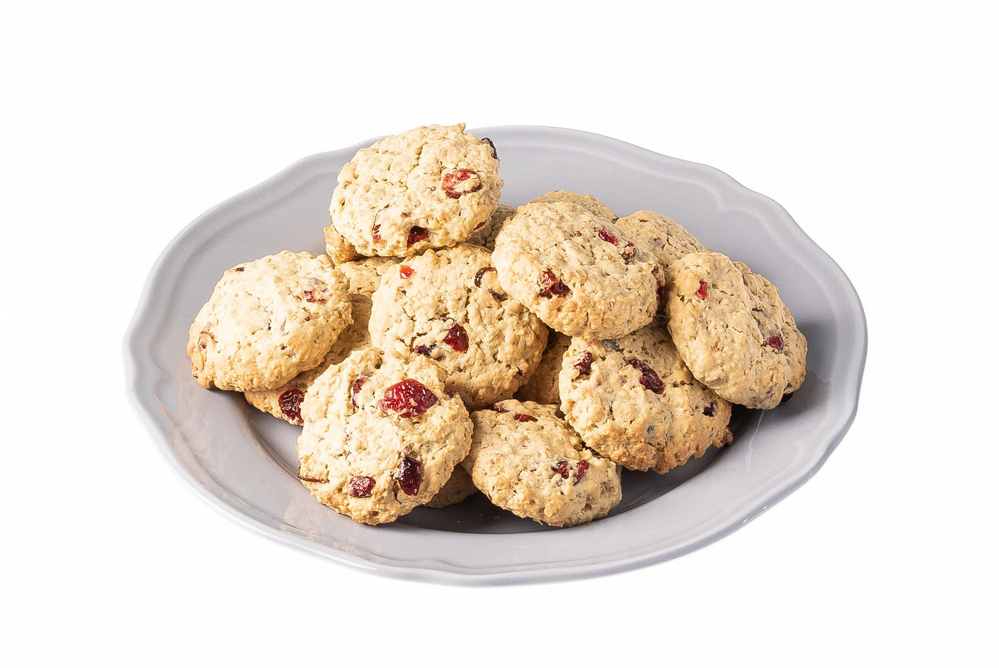

Ингредиенты
- Сахар - 150 г
- Яйцо куриное - 2 штуки
- Пшеничная мука - 220 г
- Овсяные хлопья - 220 г
- Овсяные хлопья - 220 г
- Разрыхлитель - ½ чайной ложки
- Соль - щепотка
- Вяленая клюква - 80 г
Инструкция приготовления
- Взбить размягченный маргарин с сахаром до белесого цвета.
- Добавить яйца и перемешать до однородного состояния.
- Всыпать муку, разрыхлитель и соль, перемешать.
- Добавить овсяные хлопья и клюкву, замесить однородное тесто, накрыть пленкой и убрать в холодильник на 15 минут.
- Из теста скатать шарики, выложить их на противень, покрытый пекарской бумагой, слегка приплюснуть их ладонью.
- Отправить в духовку, разогретую до 180 градусов, на 15 минут.